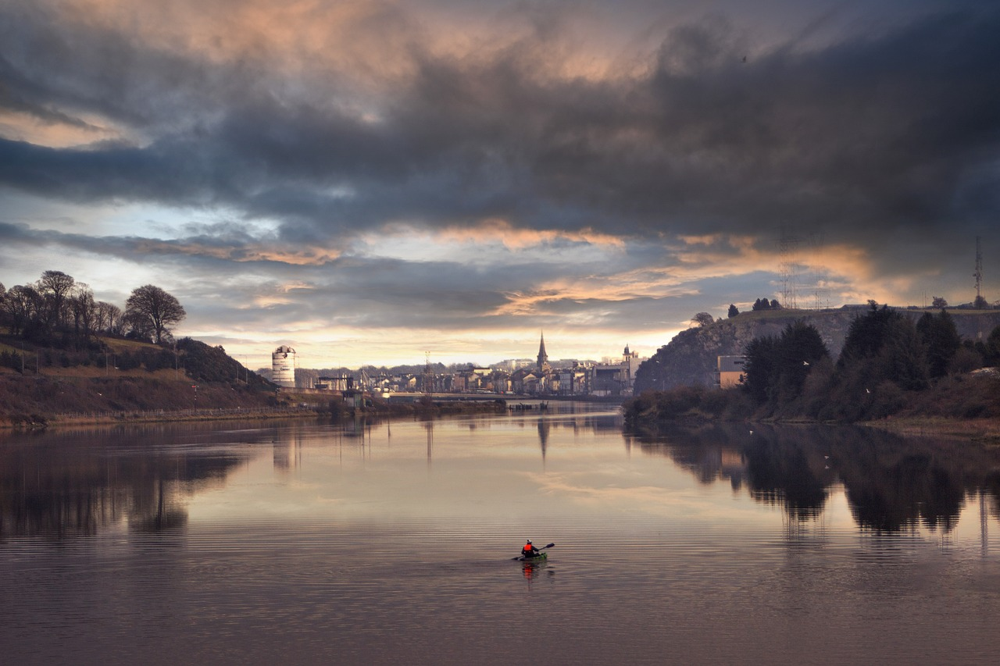

Uwielbiam podróżować po Irlandii🇮🇪 z plecakiem — to kraj pełen zielonych wzgórz, zabytkowych zamków, malowniczych nadmorskich krajobrazów oraz nieskończonej ilości Guinnessa i Jamesona do spróbowania. Szmaragdowa Wyspa to miejsce niczym z pocztówki, które oferuje mnóstwo atrakcji, niezależnie od tego, czy planujesz krótki weekend w Dublinie, czy dłuższą wyprawę po całym kraju.
Choć każdego roku Irlandię odwiedzają miliony turystów, większość z nich ogranicza się do Dublina — zobaczą główne atrakcje, wypiją kilka piw i wracają do domu.
A przecież Irlandia ma do zaoferowania o wiele więcej, zwłaszcza jeśli zdecydujesz się wynająć samochód i zboczyć z utartych szlaków. To kraj stworzony do podróży samochodowych. Serio, ruszaj w drogę! Po drodze odkryjesz urokliwe miasteczka, ruiny i zamki, z których niektóre podobno są nawiedzone.
Każdy, kto spędził trochę czasu w Irlandii, zgodzi się, że to magiczne miejsce pełne historii, natury i niezapomnianych przygód. Nikt nie opuszcza Irlandii bez uśmiechu na twarzy.
Ten przewodnik pomoże Ci w pełni wykorzystać czas na Szmaragdowej Wyspie i cieszyć się podróżą, nie przekraczając budżetu.
Top 5 rzeczy do zobaczenia i zrobienia w Irlandii

1.
Ciesz się życiem w Dublinie
Dublin to miasto, które nigdy nie przestaje oferować zabawy. Jako stolica Irlandii, Dublin zachwyca swoją 18-wieczną architekturą georgiańską, będącą jednym z najpiękniejszych przykładów w Europie. Odwiedź Zamek Dubliński, zachwyć się średniowieczną katedrą Świętego Patryka, czy przejdź przez Trinity College, gdzie mieści się słynna Księga Kells z VIII wieku. Miłośnicy literatury mogą wybrać się na samodzielną literacką wycieczkę po mieście. Fani Guinnessa powinni koniecznie zwiedzić Guinness Storehouse, a wieczorem oddać się irlandzkiemu “craic” — radosnej atmosferze w pubach z muzyką na żywo.
2. Podziwiaj Klify Moheru
Klify Moheru rozciągają się na 8 km wzdłuż wybrzeża Atlantyku w hrabstwie Clare. To jedno z najbardziej spektakularnych miejsc w Irlandii, oferujące widoki na Wyspy Aran i Zatokę Galway. Wysokość klifów wynosi 214 metrów, a wiosną można zobaczyć kolorowe maskonury. Wstęp kosztuje 12 EUR, a zarezerwowanie biletów online daje zniżki.
3. Zobacz Drogę Olbrzyma
Wyrusz do Irlandii Północnej, by zobaczyć słynną Drogę Olbrzyma, złożoną z ponad 40 000 bazaltowych słupów, które wyglądają jak gigantyczne schody. Formacja powstała 50-60 milionów lat temu w wyniku wulkanicznej działalności. Wstęp do tego miejsca jest darmowy, ale należy zapłacić za parking, jeśli przyjeżdżasz samochodem.
4. Przejedź się Ring of Kerry
Wyrusz do Irlandii Północnej, by zobaczyć słynną Drogę Olbrzyma, złożoną z ponad 40 000 bazaltowych słupów, które wyglądają jak gigantyczne schody. Formacja powstała 50-60 milionów lat temu w wyniku wulkanicznej działalności. Wstęp do tego miejsca jest darmowy, ale należy zapłacić za parking, jeśli przyjeżdżasz samochodem.
5. Zwiedzaj Galway
Galway to miasto pełne energii, idealne dla młodszych turystów. Latem jest to popularne miejsce do pływania, szczególnie na plaży Salthill. W centrum miasta możesz natknąć się na liczne występy ulicznych artystów. Galway to także miejsce, gdzie zobaczysz wspaniałą katedrę, a także mozaikę przedstawiającą prezydenta USA, Johna F. Kennedy’ego. To miasto, którego nie można pominąć!

1. Spędź czas w Cork
Cork to tętniące życiem miasto na południowym wybrzeżu Irlandii. Dawniej port handlowy, dziś to kosmopolityczne miasto uniwersyteckie pełne tanich restauracji i dynamicznego życia nocnego. Odwiedź angielski targ na poranny zakup świeżych produktów, a potem udaj się do Blarney Castle, by pocałować Blarney Stone, która ma przynosić szczęście. Warto także wybrać się na piesze wędrówki w Gougane Barra i podziwiać widoki na wybrzeże Mizen Head, gdzie znajduje się wiszący most z zapierającymi dech widokami. Popularne są również wycieczki na obserwację wielorybów, gdzie można spotkać minke, finy i humbaki (ceny wycieczek wynoszą około 40 EUR).
2. Zabawa w Dzień Świętego Patryka
Dzień Świętego Patryka to najważniejsze święto w Irlandii, pełne radości i zabawy. Zgodnie z legendą, Święty Patryk wypędził węże z wyspy. To czas, kiedy każdy staje się Irlandczykiem, a w Dublinie odbywa się największa parada, przyciągająca tłumy turystów. Warto zarezerwować nocleg z wyprzedzeniem, ponieważ wszystko szybko się sprzedaje.
3. Pocałuj Kamień Blarney
Zamek Blarney, znajdujący się niedaleko Cork, jest jednym z najstarszych w Irlandii. Kamień Blarney, wbudowany w zamek, według legend obdarza elokwencją tych, którzy go pocałują. To miejsce przyciąga turystów od ponad 200 lat, w tym sławnych gości, takich jak Mick Jagger czy Winston Churchill. Wstęp do zamku kosztuje 22 EUR.
4. Zobacz historyczne zamki
Irlandia pełna jest zamków, a ich ruiny są częścią kraju. Warto odwiedzić m.in. Dunluce Castle, majestatyczny Rock of Cashel, czy zachowany Cahir Castle w Tipperary. Jeśli chcesz poczuć się jak średniowieczny rycerz, wybierz się na ucztę w Bunratty Castle lub zatrzymaj się w luksusowym Ashford Castle. Dla tych, którzy planują zwiedzać wiele zamków, polecamy Heritage Card, która kosztuje 40 EUR i zapewnia darmowy wstęp do wielu zamków w Irlandii.
5. Wędruj po Connemarze
Connemara to piękny park narodowy w hrabstwie Galway, który oferuje spektakularne widoki i szlaki turystyczne. Można tu podziwiać dziką przyrodę, spotkać króliki, lisy i konie Connemara, a także odkrywać ruiny zamków i obszary górnicze. Istnieje wiele szlaków, zarówno łatwych, jak i bardziej wymagających, a wstęp do parku jest darmowy.
6. Zwiedzaj Arboretum Johna F. Kennedy’ego
Położone w hrabstwie Wexford, to miejsce z ponad 4 500 gatunkami drzew i krzewów. Znajdziesz tu różnorodne ogrody, w tym jeden z ponad 500 odmianami rododendronów. Arboretum zostało założone na cześć prezydenta Kennedy’ego, którego pradziadek pochodził z okolic. Wstęp jest darmowy, a miejsce oferuje także kawiarnie i strefy piknikowe.
W Irlandii łatwo przekroczyć budżet, szczególnie jeśli często odwiedzasz puby. Oto kilka wskazówek, jak zaoszczędzić, nie rezygnując z atrakcji:
1. Zabierz własną butelkę na wodę
Woda z kranu jest tutaj bezpieczna, więc warto mieć przy sobie wielorazową butelkę. W ten sposób zaoszczędzisz na wodzie butelkowanej i pomożesz chronić środowisko. Ja polecam LifeStraw, która ma wbudowany filtr.
2. Korzystaj ze zniżek studenckich
Jeśli masz legitymację studencką, wiele atrakcji, muzeów czy biletów na transport możesz kupić o połowę taniej. Zniżki obejmują także osoby do 26. roku życia, więc warto o nie zapytać wszędzie.
3. Ogranicz picie alkoholu
W Irlandii, gdzie puby są tak popularne, łatwo wydać sporo na piwo. Zamiast tego korzystaj z promocji w happy hour, pij w domu, albo zrezygnuj z alkoholu.
4. J edz w pubach
Jeśli chcesz zaoszczędzić na jedzeniu, odwiedź lokalne puby. Możesz spróbować tradycyjnych potraw irlandzkich, które są smaczne, sycące i przystępne cenowo.
5. Korzystaj z punktów hotelowych
Zapisz się na programy lojalnościowe hoteli, aby gromadzić punkty, które później wymienisz na darmowe noclegi. To świetny sposób, aby zaoszczędzić na kosztach zakwaterowania.
6. Gotuj samodzielnie
Pobyt w hostelu to świetna okazja do poznania innych podróżnych, a wiele hosteli ma kuchnię. Największą siecią spożywczą jest Tesco, które oferuje duże supermarkety i mniejsze sklepy w miastach. Warto także odwiedzić Aldi i Lidl, które oferują tanie produkty spożywcze.
Dzięki tym prostym wskazówkom możesz jeszcze bardziej cieszyć się swoją podróżą po Irlandii, nie martwiąc się o budżet!
1. Transport publiczny
W Irlandii transport publiczny jest wygodny, bezpieczny i efektywny. Ceny biletów na autobusy w Dublinie wynoszą około 3 EUR, w Galway 2,20 EUR, a w Belfaście, w Irlandii Północnej, 2,30 GBP.
Jeśli zdecydujesz się na kartę LEAP (którą można naładować, by płacić za transport publiczny), zaoszczędzisz nawet do 31% w porównaniu z zakupem biletów papierowych. Karta umożliwia również korzystanie z systemu DublinBikes, czyli wypożyczalni rowerów.
Bilet dzienny na transport publiczny to wydatek w przedziale 5-10 EUR.
2. Autobusy
Irlandia to niewielki kraj, dlatego podróże autobusem rzadko trwają dłużej niż kilka godzin, a ceny są przystępne. Na przykład, podróż z Dublina do Belfastu w Irlandii Północnej kosztuje około 10 EUR i trwa 2,5 godziny. Z Dublina do Galway podróż wyniesie około 2,5 godziny, a bilet kosztuje od 15 do 20 EUR.
3. Pociągi
Irish Rail to główny przewoźnik kolejowy w Irlandii. Choć ceny biletów są wyższe niż w przypadku autobusów, podróże pociągiem nadal są stosunkowo tanie. Na przykład, podróż z Cork do Dublina kosztuje od 35 do 47 EUR i trwa około 2,5 godziny, a z Galway do Dublina zapłacisz od 30 do 35 EUR, również na około 2,5 godziny podróży.
4. Wynajem samochodu
Koszt wynajmu samochodu w Irlandii jest przystępny, zaczynając od około 25 EUR dziennie przy wynajmie na kilka dni. Jest to doskonała opcja do zwiedzania kraju. Należy pamiętać, że aby wynająć samochód, trzeba mieć co najmniej 21 lat. Większość aut jest z manualną skrzynią biegów, a w Irlandii jeździ się po lewej stronie.
Irlandia to świetny kierunek dla podróżujących z ograniczonym budżetem, oferujący wygodny transport publiczny, tanie opcje noclegowe i wyjątkową lokalną kuchnię. Dzięki autobusom, pociągom i aplikacjom ridesharingowym przemieszczanie się po kraju jest łatwe i szybkie. Z pomocą kart LEAP można korzystać z tańszych biletów na transport publiczny, a rowery miejskie i darmowe wycieczki piesze umożliwiają zwiedzanie w ekonomiczny sposób. Irlandia zapewnia wygodne warunki podróży, nie obciążając portfela.
This site was created with the Nicepage